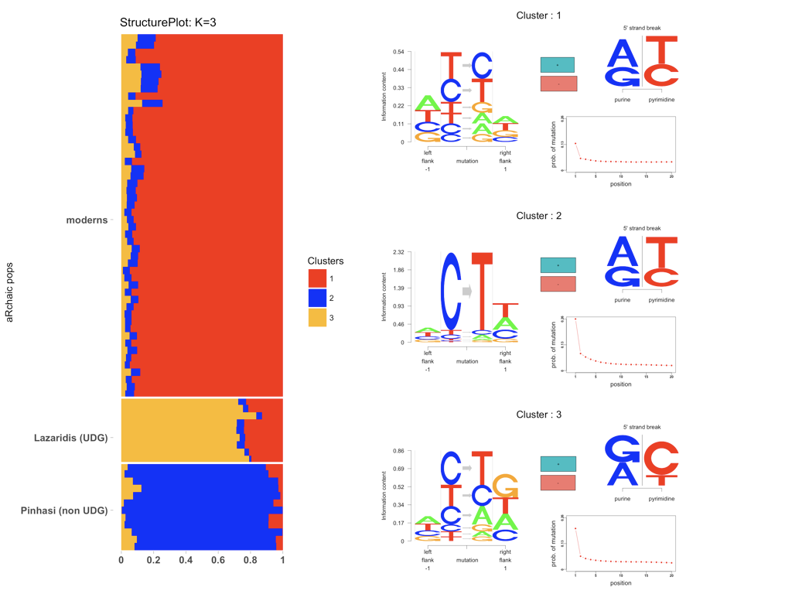

Introduction
Installation
Tutorial
Extras
Introduction
Installation
Tutorial
Extras
aRchaic is a R/python software package developed by Kushal K Dey and Hussein Al Asadi in collaboration with Matthew Stephens and John Novembre. aRchaic provides tools for clustering and visualization of ancient and/or modern DNA samples based on DNA damage patterns.
aRchaic fits a Grade of Membership (GoM) model, also popularly known as admixture model in population genetics, where each DNA sample (modern/ancient) is allowed to have memberships in multiple clusters. In our model, each cluster is determined by a specific DNA damage profile. aRchaic provides a STRUCTURE plot type visualization of the grades of memberships of the samples in the clusters and also a logo plot representation of the damage profile of each cluster. A demo visualization is provided below.

On the left is a vertical stacked bar chart with each bar representing a sample. The bar is of height 1 and is colored proportionately with the grades of membership in different clusters (there are 3 colors corresponding to 3 clusters in this case). On the right are the logo plot representations of the 3 clusters. A cluster logo plot has several components to it, each component highlighting some damage characteristics.

aRchaic also provides the user other exploratory tools to assess DNA damage - for example, tracking mutational patterns aross reads, frequency distribution of mutational flanking bases, read length distribution over reads with and without comprising of DNA damage etc. It also fits a classification GoM model to classify contaminated samples into "modern" and "ancient" classes, based on DNA damage profiles.
Check our documentation of all functions here and a tutorial demonstrating the application of aRchaic and its various functionalities on data.
To install and run aRchaic, the user needs to have the following (installation instructions provided in the links)
aRchaic uses Python interface for data preprocessing and R/RStudio for the main statistical analysis. R can be downloaded from CRAN . To start R, users can use the R GUI that comes with the install or run R through terminal by typing
R
We recommend users to install and use RStudio , a well maintained GUI for R which is extremely user friendly.
Once in R/RStudio, the user can install the Github developmental version of the aRchaic R package through devtools.
devtools::install_github("aRchaic")
aRchaic installs as dependencies all the packages mentioned above. However, to manually install the required packages, the installation instructions are provided below.
### Github R packages
devtools::install_github("kkdey/maptpx")
devtools::install_github("kkdey/CountClust")
devtools::install_github("kkdey/classtpx")
### CRAN R packages
install.packages("ggplot2")
install.packages("gridBase")
### Bioconductor package
source("https://bioconductor.org/biocLite.R")
biocLite("Logolas")
aRchaic takes a MutationFeatureFormat (MFF) file as input, which is a comma separated (.csv) file generated from a BAM file using pysam. Each row of the MFF file generated lists the features for a mutation, and the frequency of mutations with similar feature occurring in the BAM file. An example is provided below.
TG->AC,1,45,G,C,-,7
CG->AT,38,31,G,G,-,1
CC->TC,56,4,G,C,+,1
TG->AT,93,28,T,T,-,1
AC->TA,1,39,T,G,+,8
CA->CA,1,50,C,C,+,1
CA->GT,4,83,T,T,+,1
CA->GC,22,52,C,C,-,1
GG->AG,39,0,C,G,-,22
In the first row above, the mutational feature is TG → AC, 1, 45, C, C and the count is 7. To be more specific, the mutation corresponds to a G → A mismatch, which is flanked by T on the 5’ end and C on the 3’ end (this is also referred to as mutation trio). The mismatch occurs 1 base from the start of the read and 45 bases from end of the read, where start and end are the 5' and 3'ends with respect to the reference genome to which the read is mapped. Furthermore, it tells us that the read corresponding to the mutation is flanked by G at the 5’ strand-break and C at the 3’ strand-break. The "-" signifies that the mismatch lies on read mapped to the reverse strand.
The user can generate the MutationFeatureFormat (MFF) file using the "generate_summary_files.py" file. The python script requires the BAM file (.bam) for the sample along with its corresponding index file (.bam.bai) Also it needs the user to load the reference genome to which the reads in the BAM file are mapped to. A description of the code to generate MFF file from BAM is provided below.
usage: generate_summary_bams.py [-h] -b BAM -f FASTA -o OUT [--add-chr]
[--use-tags]
optional arguments:
-h, --help show this help message and exit
-b BAM, --bam BAM bam file
-f FASTA, --fasta FASTA
reference file
-o OUT, --out OUT out file
--add-chr add chr prefix?, you can find out by running samtools
idxstats | head -1
--use-tags use the MD and NM tags in your bam file?
The primary function of the aRchaic package is
aRchaic::aRchaic_cluster(folders, K,
labs, run_from = "start",
output_dir, save_plot = TRUE, .....)
#' folders: names of the folder (s) containing MutationFeatureFormat files from one or more sources
#' K : the number of clusters to fit
#' labs: the labels of the samples (defaults to folder name where they belong)
#' run_from: if "start", will run data processing and clustering steps from scratch.
if "gom", performs only the clustering step
if "plot", performs just the visualization
#' output_dir: The output directory where to store the output files and model output
#' save_plot: if TRUE, it saves the visualizations
The function generates as output a
We demonstrate how we generate a MFF file from an example BAM file. We run
generate_summary_bams example.bam ref.fa The code will take around 5 minutes to run and generate the MFF file
The MFF file is a
TG->AC,1,45,G,C,-,7
CG->AT,38,31,G,G,-,1
CC->TC,56,4,G,C,+,1
TG->AT,93,28,T,T,-,1
AC->TA,1,39,T,G,+,8
CA->CA,1,50,C,C,+,1
CA->GT,4,83,T,T,+,1
CA->GC,22,52,C,C,-,1
GG->AG,39,0,C,G,-,22
One can view the mutational features in a MutationFeatureFormat (MFF) file using the
aRchaic_view (dir = "../data/Skoglund/",
file = "Ajv59.hs37d5.fa.merged.q30.csv"
breaks = c(-1, seq(1,20,1)),
flanking_bases =1,
logo.control = list(),
title = "Skoglund aDNA",
output_dir = NULL,
save_plot = TRUE)
The output from this code is the following logo plot.

We supply as input arguments, the input directory
There are also control parameters to this plot that the user can toggle with.
This function provides an estimated read length distribution of all reads in a MFF file. Every mutation in a MFF file comes from a read, for which we record the distance from the ends of the read. This provides us with the length of the read by summing the distance from the two ends.
We present an example of applying this function on a single file of the directory The output from this function would look like the following We provide plot options in the form of If Extras
read_length_distribution(dir = "../data/Skoglund/",
pattern = "Ajv59.hs37d5.fa.merged.q30.csv",
end_break = 5,
plot_layout = c(1,1),
cols = c("red", "green", "blue"),
cex_legend = 0.5,
cex.main = 0.5)

read_length_distribution(dir = "../data/Allentoft/",
pattern = NULL,
end_break = 5,
plot_layout = c(3,3),
cols = c("red", "green", "blue"),
cex_legend = 0.5,
cex.main = 0.5)